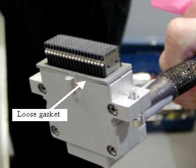

Operating Documentation
Direction 5193575-800, Rev# 5
LightSpeed 7.X Service Information - Adv
Operating Documentation |
| Required Persons | Preliminary Reqs | Procedure | Finalization |
|---|---|---|---|
| 1 | NA | 9 hours | 15 mins |
Backplane replacement requires the removal of the Digital Detector assembly. This procedure will provide a guide to the overall procedure but will reference directly to the detector replacement procedure for that portion of the procedure.
| Last Revised: | October 25, 2006 |
| Item | Qty | Effectivity | Part# | Manufacturer | |
|---|---|---|---|---|---|
| VCT chain hoist - order from Tool Depot (Chain hoist with roller arm/hook instead of 2 hooks will not work) | 1 | - | 5149069 | - | |
| VCT Detector lift hook (Order from Tool Depot) | 1 | - | 5142366 | - | |
| FE Toolkit | 1 | - | - | - | |
| Item | Qty | Effectivity | Part# | Manufacturer |
|---|---|---|---|---|
| Tie-wraps | AR | - | - | - |
| Hand Towels, for clean-up | AR | - | - | - |
| Item | Qty | Effectivity | Part# | Manufacturer | |
|---|---|---|---|---|---|
| Backplane | 1 | - | - | - | |
| Follow ALL required safety and PPE procedures customary for your organization, when working on this product. | |
| Condition | Reference | Eff |
|---|---|---|
Only trained service personnel should service the GE CT Scanner. | - | - |
Move the table full back out of the gantry but leave it up to use as a work table.
Remove the right side gantry cover and disable Axial Drive and HVDC from the service switch panel.
Position the detector at 12 o'clock and lock gantry rotation.
Shut down all gantry power from the service switch panel.
Remove all gantry covers.
Refer to Parts Replacement → Gantry → Enclosure → (Cover Removal Procedure).
Cover the Tube Collimator port to protect it against dropped tools or screws. (Cloth or any other available item)
Remove the Air Plenum as shown in Detector Air Plenum Removal/Installation.
| NOTE: | Reminder that using the mouse right button on the above document link and selecting “Open in new Window” will keep this document open at the same time for ease in use. Can leave the Air Plenum instructions open for later use when reinstalling the plenum. |
Using the VCT Detector Replacement Procedure remove the digital detector from the gantry using sections 4.4 and 4.5.
There is no need to use the Replacement wizard since the detector is not being replaced.
Leave the detector on the hoist during backplane replacement. Swing the detector out of the way to a location that it is not a hazard during work on the backplane.
Remove all cabling from the backplane to be replaced. Both backplane procedures are basically the same. The low channel backplane will be used for examples in this procedure as it has the addition of the fiber optic connections to the DCB.
| NOTE: | There is a loose gasket on the backplane cable. After pulling backplane cable from connector, place the gasket in a known location to avoid losing it. See Illustration 1. |
Illustration 1: Backplane Connector

Remove the DIFB cover from the chassis behind the backplane to be replaced. Using the DIFB ejector tool, disconnect the DIFB’s from the backplane connectors. (Including the DCB if removing the low channel backplane) See DIFB replacement procedure for details.
| NOTE: | The DCB fiber optic cables MUST be disconnected prior to ejecting the DCB board from the IFB chassis. |
Remove the backplane cover shield. See Illustration 2.
Illustration 2: Backplane Cover Shield

After removing the backplane cover shield, remove the EMC connector shields from all Sub-D connectors and set them with the backplane cable gasket. See Illustration 3 for shield example.
Illustration 3: EMC connector shields

Remove the 9 screws around the edge of the backplane.
Lift off the backplane and place it in a static bag.
Position new backplane on the DAS plate.
Install 9 screws and torque to the value shown in Table 1.
Table 1: Backplane Screw Torque
| 2.3 N-m | 20 lb-in | 1.7 lb-ft | 23.4 kg-cm |
Place the EMC shields onto the Sub-D connectors so the fingers are angled away from the backplane as shown in Illustration 3.
Position the backplane cover shield and torque screws to the value shown in Table 2. Reference Illustration 2 for the backplane shield.
Table 2: Backplane Cover Screws
| 2.3 N-m | 20 lb-in | 1.7 lb-ft | 23.4 kg-cm |
Place the supplied backplane barcode sticker on the backplane shield over top of the old sticker to identify the new backplane on the system.
Insert the DIFB’s (and DCB if low channel backplane) into the backplane. Only use your fingers to seat the cards.
Install the DIFB chassis cover.
Install the 4 captive DIFB cover screws and torque to the value shown in Table 3.
Table 3: DIFB Captive Screw Torque
| 2.75 N-m | 2 lb-ft | 24 lb-in | 28 Kg-cm |
Install the 2 M6 DIFB cover screws and torque to the value shown in Table 4.
Table 4: M6 Corner Screw Torque
| 7.9 N-m | 5.8 lb-ft | 70 lb-in | 80.5 Kg-cm |
Reinstall the DAS fiber optic cables and Sub-D connectors. Using proper torque will avoid breaking cable jackscrews. Torque Sub-D connectors to the value shown in Table 5.
Table 5: Sub-D connector Torque
| 0.45 N-m | 4 lb-in | 0.3 lb-ft | 4.6 kg-cm |
Position the DAS backplane cable gasket on the connector as shown in Illustration 1 and carefully insert the connector into the backplane. When properly lined up, the connector should easily slide onto the backplane pins.
Torque the backplane connector to the value shown in Table 6.
Table 6: Backplane Connector Torque
| 2.3 N-m | 20 lb-in | 1.7 lb-ft | 23.4 kg-cm |
Install the Detector as shown in VCT Detector Replacement Procedure using section 4.6.
Install the Air Plenum as shown in Detector Air Plenum Removal/Installation.
Finish installing the DAS/Detector harnessing as shown in VCT Detector Replacement Procedure section 4.8.
From the DASTools interface run the following rotating tests.
Select and Run [mA Ratio Test] (creates/updates the bad channel map)
Select and Run the [Auto Test] from DASTools.
If all the checks pass continue with the next section. If anything fails, troubleshoot per the appropriately failed test.
Install all gantry covers remembering to enable Axial Drive just before installing gantry right side cover. Gantry covers MUST be in place prior to running calibrations.
The detector requires up to 45 minutes to reach operating temperature prior to starting the calibration process. Failure to wait will cause artifacts later when the detector reaches operating temperature. The time to warm up starts from the time the gantry power was turned on. Check the Common Service Desktop to make sure the detector temperature is at 38 degrees C +/- 1.5 prior to starting calibrations.
Perform Collimator calibration using [Scanner Utilities] - [Collimator Cal] .
Perform Full Spectral calibration using [Scanner Utilities] - [Detailed Cal] .
| NOTE: | CT# adjust is run as part of Detailed Cal, no need to run it separately. |
Perform FastCal using [Daily Prep] – [Fastcal] . (Required after every detailed calibration)
Perform a generic service scan using the QA phantom to make sure the system scans as expected.